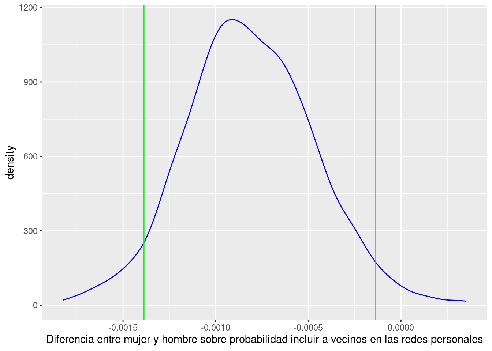

```{r, message=F}
pacman::p_load(tidymodels,
tidyverse,
kableExtra,
interplot,
margins,
sjPlot,
stargazer,
httr,
car,
lmtest,
sandwich,
texreg,
visreg)
```En este ejercicio vamos a utilizar nuevamente ELSOC en su versión 2019. Esta vez nos preguntamos acerca de los determinantes que influten en la probabilidad de armar vinculos de confidencia con vecinos. La pregunta es del todo relevante, puesto que los vínculos vecinales la mayoría de las veces constituyen el contexto que da forma a la estructura de oportunidades de interacción con otros (as) en la vida cotidiana (Blau 1977; Scott L. Feld 1981). La especificidad de los vecindarios es que son contextos en los cuales la actividad e interacción social están fuertemente condicionados por la proximidad física y social (Scott L. Feld 1982). Asimismo, suelen contener a otros focos de interacción (Scott L. Feld 1981) como escuelas o asociaciones voluntarias. Por esta razón, los barrios o vecindarios implican más oportunidades y probabilidades de encuentro y vinculación entre sus integrantes.
Blau, Peter Michael. 1977. Inequality and Heterogeneity: A Primitive Theory of Social Structure. Vol. 7. Free Press New York.
Feld, Scott L. 1981. “The Focused Organization of Social Ties.” American Journal of Sociology 86 (5): 1015–35. https://www.jstor.org/stable/2778746.
Feld, Scott L. 1982. “Social Structural Determinants of Similarity Among Associates.” American Sociological Review, 797–801.
Wellman, Barry. 1996. “Are Personal Communities Local? A Dumptarian Reconsideration.” Social Networks 18 (4): 347–54. https://doi.org/10.1016/0378-8733(95)00282-0.
Fernandez, R. 1993. “Review of American Apartheid.” Contemporary Sociology 22 (5): 365–66. https://doi.org/10.2307/2074502.
DiPrete, Thomas A., Andrew Gelman, Tyler McCormick, Julien Teitler, and Tian Zheng. 2011. “Segregation in Social Networks Based on Acquaintanceship and Trust.” American Journal of Sociology 116 (4): 1234–83. https://doi.org/10.1086/659100.
Massey, Douglas S., and Nancy A. Denton. 2003. American Apartheid: Segregation and the Making of the Underclass. 10. print. Cambridge, Mass.: Harvard Univ. Press.
Völker, Beate, and Henk Flap. 2007. “Sixteen Million Neighbors: A Multilevel Study of the Role of Neighbors in the Personal Networks of the Dutch.” Urban Affairs Review 43 (2): 256–84. https://doi.org/10.1177/1078087407302001.
Tilly, Charles. 2009. Durable Inequality. Nachdr. Berkeley: Univ. of California Press.
Wellman (1996) y Fernandez (1993) indican que aún cuando los lazos locales generalmente sean débiles, son contactos frecuentes. Su mayor frecuencia deriva de la cantidad relativa de tiempo que pasamos en nuestros vecindarios y hogares. Razón por la cual puede ser inevitable el encuentro con aquellos con los cuales compartimos un vecindario. Si consideramos que los barrios y los lugares de trabajo suelen ser socialmente más homogéneos Scott L. Feld (1981), el predominio de este tipo de lazos puede indicar altos niveles de segregación y aislamiento social (DiPrete et al. 2011; Massey and Denton 2003). Por lo tanto, las áreas locales son un campo de investigación óptimo para estudiar cómo los extraños se convierten en amigos (Völker and Flap 2007) y para el estudio general de las desigualdades persistentes (Tilly 2009).
¿sobre qué bases los individuos establecen o no relaciones de cercanía con sus vecinos? y, ¿por qué algunas personas los incluyen en sus redes y otras no?
En efecto el ejericio incluirá lo siguiente:
- Creación de data frames diádico.
- Creación de variable dependiente binaria.
- Estimación de errores estándar robustos (dada la dependencia en la estructura de datos).
- Estimación de un modelo de regresión logística con la variable dependiente a nivel de diáda (vecino o no vecino) y como variables dependientes atributos del ego (se pueden -o deben- incluir otros niveles como el barrial, y caracteírticas de los alteris).
En la sesión del miércoles 26 de septiembre:
- Dvidir data en Train y Test
- Volver a ajustar modelo
- Test Data Class Prediction
- Test Data Class Probabilities
- Preparación final de datos para evaluación
- Evaluación del modelo (Confusion Matrix, Accuracy, Sensitivity, etc.)
1 Librerías
2 data (ELSOC 2019 w4)
```{r}
#ELSOC 2017
url <- "https://github.com/rcantillan/ricantillan.rbind.io/raw/main/dat/ELSOC/ELSOC_W02_v3.00_R.RData"
response <- GET(url)
local_path <- "ELSOC_W02_v3.00_R.RData"
writeBin(response$content, local_path)
load("ELSOC_W02_v3.00_R.RData") #reemplazar por ruta local de descarga
#ELSOC 2016
url <- "https://github.com/rcantillan/ricantillan.rbind.io/raw/main/dat/ELSOC/ELSOC_W01_v4.01_R.RData"
response <- GET(url)
local_path <- "ELSOC_W01_v4.01_R.RData"
writeBin(response$content, local_path)
load("ELSOC_W01_v4.01_R.RData")
```3 Construcción variables
3.1 egonet (wide)
```{r}
egonet<-elsoc_2017 %>%
#glimpse() %>%
dplyr::select(7:24)
glimpse(egonet)
```Rows: 2,473
Columns: 18
$ r13_sexo_01 <dbl> 1, 1, 2, 1, 2, 1, 2, 1, 2, 2, 1, 1, 2, 2, 2, 1, 1, 1, …
$ r13_edad_01 <dbl> 77, 60, 54, 55, 44, 40, 31, 37, 32, 36, 30, 22, 55, 41…
$ r13_relacion_01 <dbl> 1, 1, 3, 4, 2, 3, 2, 1, 1, 4, 1, 4, 3, 2, 3, 4, 2, 3, …
$ r13_tiempo_01 <dbl> 5, 5, 5, 3, 5, 5, 5, 5, 5, 3, 1, 2, 5, 5, 5, 3, 5, 5, …
$ r13_barrio_01 <dbl> 1, 1, 1, 1, 1, 1, 1, 1, 1, 2, 1, 2, 1, 1, 1, 1, 1, 1, …
$ r13_educ_01 <dbl> 2, 3, 1, 3, 5, 3, 5, 3, 3, 2, 2, 5, 4, 3, 1, -999, 5, …
$ r13_relig_01 <dbl> 1, 1, 1, 1, 4, 1, 1, 1, 3, 1, 1, 1, 5, 3, 1, 1, 1, 1, …
$ r13_ideol_01 <dbl> 5, 6, 6, 6, 6, 6, 6, 2, 6, 5, 6, 6, 6, 5, 6, 6, 5, 6, …
$ r13_contacto_01 <dbl> 1, 1, 1, 1, 1, 1, 1, 1, 1, 1, 1, 1, 1, 1, 1, 1, 2, 1, …
$ r13_sexo_02 <dbl> NA, NA, 2, NA, NA, NA, 1, 2, 1, NA, NA, NA, NA, NA, NA…
$ r13_edad_02 <dbl> NA, NA, 33, NA, NA, NA, 57, 67, 73, NA, NA, NA, NA, NA…
$ r13_relacion_02 <dbl> NA, NA, 3, NA, NA, NA, 1, 3, 3, NA, NA, NA, NA, NA, NA…
$ r13_tiempo_02 <dbl> NA, NA, 5, NA, NA, NA, 5, 5, 5, NA, NA, NA, NA, NA, NA…
$ r13_barrio_02 <dbl> NA, NA, 1, NA, NA, NA, 1, 1, 1, NA, NA, NA, NA, NA, NA…
$ r13_educ_02 <dbl> NA, NA, 3, NA, NA, NA, 3, -999, 1, NA, NA, NA, NA, NA,…
$ r13_relig_02 <dbl> NA, NA, 1, NA, NA, NA, 1, 1, 1, NA, NA, NA, NA, NA, NA…
$ r13_ideol_02 <dbl> NA, NA, 6, NA, NA, NA, 5, 4, 6, NA, NA, NA, NA, NA, NA…
$ r13_contacto_02 <dbl> NA, NA, 1, NA, NA, NA, 1, 1, 1, NA, NA, NA, NA, NA, NA…3.2 data alteris (a formato long)
```{r}
columnas <- c("sexo", "edad", "educ", "relig", "ideol", "barrio", "relacion")
num_alters <- 5
alter_list <- list()
for (i in 1:num_alters) {
alter_cols <- paste0("r13_", columnas, "_", sprintf("%02d", i))
alter <- elsoc_2017 %>%
dplyr::select(idencuesta, all_of(alter_cols)) %>%
rename_with(~ columnas, alter_cols) %>%
mutate(n = i)
alter_list[[i]] <- alter
}
alteris <- bind_rows(alter_list)
alteris<-arrange(alteris, idencuesta)
kable(head(alteris, n=25))
```| idencuesta | sexo | edad | educ | relig | ideol | barrio | relacion | n |
|---|---|---|---|---|---|---|---|---|
| 1101011 | 1 | 77 | 2 | 1 | 5 | 1 | 1 | 1 |
| 1101011 | NA | NA | NA | NA | NA | NA | NA | 2 |
| 1101011 | NA | NA | NA | NA | NA | NA | NA | 3 |
| 1101011 | NA | NA | NA | NA | NA | NA | NA | 4 |
| 1101011 | NA | NA | NA | NA | NA | NA | NA | 5 |
| 1101012 | 1 | 60 | 3 | 1 | 6 | 1 | 1 | 1 |
| 1101012 | NA | NA | NA | NA | NA | NA | NA | 2 |
| 1101012 | NA | NA | NA | NA | NA | NA | NA | 3 |
| 1101012 | NA | NA | NA | NA | NA | NA | NA | 4 |
| 1101012 | NA | NA | NA | NA | NA | NA | NA | 5 |
| 1101013 | 2 | 54 | 1 | 1 | 6 | 1 | 3 | 1 |
| 1101013 | 2 | 33 | 3 | 1 | 6 | 1 | 3 | 2 |
| 1101013 | NA | NA | NA | NA | NA | NA | NA | 3 |
| 1101013 | NA | NA | NA | NA | NA | NA | NA | 4 |
| 1101013 | NA | NA | NA | NA | NA | NA | NA | 5 |
| 1101021 | 1 | 55 | 3 | 1 | 6 | 1 | 4 | 1 |
| 1101021 | NA | NA | NA | NA | NA | NA | NA | 2 |
| 1101021 | NA | NA | NA | NA | NA | NA | NA | 3 |
| 1101021 | NA | NA | NA | NA | NA | NA | NA | 4 |
| 1101021 | NA | NA | NA | NA | NA | NA | NA | 5 |
| 1101022 | 2 | 44 | 5 | 4 | 6 | 1 | 2 | 1 |
| 1101022 | NA | NA | NA | NA | NA | NA | NA | 2 |
| 1101022 | NA | NA | NA | NA | NA | NA | NA | 3 |
| 1101022 | NA | NA | NA | NA | NA | NA | NA | 4 |
| 1101022 | NA | NA | NA | NA | NA | NA | NA | 5 |
3.3 recode
```{r}
alteris$educ <-factor(Recode(alteris$educ ,"1=1;2:3=2;4=3;5=4;-888=NA;-999=NA"))
alteris$relig<-factor(Recode(alteris$relig,"1=1;2=2;3=3;4=4;5=5;-888=NA;-999=NA"))
alteris$ideol<-factor(Recode(alteris$ideol,"1=1;2=2;3=3;4=4;5=5;6=6;-888=NA;-999=NA"))
alteris$edad <-factor(Recode(alteris$edad ,"0:18=1;19:29=2;30:40=3;41:51=4;52:62=5;63:100=6;-888=NA;-999=NA"))
alteris$sexo <-factor(Recode(alteris$sexo ,"1=1;2=2;-888=NA;-999=NA"))
alteris$barrio<-factor(Recode(alteris$barrio ,"1=1;2=0;-888=NA;-999=NA"))
#alteris<-na.omit(alteris)
```3.4 data egos (Entrevistados)
```{r}
asoc<-elsoc_2016%>%dplyr::select(idencuesta,c12_01,c12_02,c12_03,c12_04,c12_05,
c12_06,c12_07,c12_08,c12_09)
egos <-elsoc_2017 %>%dplyr::select(idencuesta,ego_sexo=m0_sexo,ego_edad=m0_edad,
ego_ideol=c15,ego_educ=m01,ego_relig=m38,ego_ideol=c15,
t01,t02_01,t02_02,t02_03,t02_04,ponderador02)
egos<-left_join(egos,asoc, by="idencuesta")
egos <- as_tibble(egos)
```Recodificamos las variables de la data de ego siguiendo el patrón de la data de alteris.
```{r}
egos$ego_educ <-factor(Recode(egos$ego_educ,"1:3=1;4:5=2;6:7=3;8:10=4;-999:-888=NA"))
egos$ego_relig<-factor(Recode(egos$ego_relig,"1=1;2=2;9=3;7:8=4;3:6=5;-999:-888=NA"))
egos$ego_ideol<-factor(Recode(egos$ego_ideol,"9:10=1;6:8=2;5=3;2:4=4;0:1=5;11:12=6;-999:-888=NA"))
#egos$ego_edad <-factor(Recode(egos$ego_edad,"0:18=1;19:29=2;30:40=3;41:51=4;52:62=5;63:100=6;-888=NA;-999=NA"))
egos$ego_sexo <-factor(Recode(egos$ego_sexo,"1=1;2=2;-888=NA;-999=NA"))
```3.5 Join
Con la función left_join agregamos la data de alteris y egos hacia el lado, en función del id de ego.
```{r}
obs<-left_join(egos,alteris, by="idencuesta")
obs[obs=="-999"] <- NA
obs[obs=="-888"] <- NA
```3.6 Crear variables independientes de interés
```{r}
# distancia
obs <- obs %>%
mutate(sexo_dist1 = ifelse(sexo == ego_sexo, 0, 1))%>%
mutate(educ_dist1 = ifelse(educ == ego_educ, 0, 1))%>%
mutate(ideol_dist1= ifelse(ideol== ego_ideol,0, 1))%>%
mutate(relig_dist1= ifelse(relig== ego_relig,0, 1))%>%
# índice compromiso barrial
mutate(neigh_attach=(t02_01+t02_02+t02_03+t02_04)/4)%>%
# tipos de comportamiento asociativo
mutate_at(vars(matches("c12")), ~ifelse(. < 2, 0, 1)) %>%
mutate(expresivas= c12_01+c12_02+c12_04)%>%
mutate(instrument= c12_03+c12_05+c12_06+c12_07+c12_08)
```3.7 Variable dependiente (alter vecino)
```{r, message=FALSE}
x <- c("No es vecino", "Es vecino")
obs%>%
filter(!is.na(barrio)) %>% # Filtrar las filas donde barrio no sea NA
ggplot(aes(x = barrio, fill = barrio)) +
geom_bar(fill = "blue", alpha = 0.5) +
geom_text(aes(label = scales::percent(..count../sum(..count..))),
color="white",
stat = "count",
position = position_stack(vjust = 0.5),
size = 4) + # Agregar etiquetas de texto con porcentajes
labs(title = "Alter es vecin@",
x = "",
y = "Frecuencia") +
scale_x_discrete(labels=x) +
theme_minimal()
```
4 Modelo de regresión logística
4.1 Modelo 1
```{r}
m1<-glm(barrio~
ego_sexo
+ ego_educ
+ ego_edad
+ expresivas
+ instrument
+ t01
+ neigh_attach, data = obs, family = "binomial")
summary(m1)
```
Call:
glm(formula = barrio ~ ego_sexo + ego_educ + ego_edad + expresivas +
instrument + t01 + neigh_attach, family = "binomial", data = obs)
Deviance Residuals:
Min 1Q Median 3Q Max
-1.5409 -1.2273 0.9292 1.0715 1.6307
Coefficients:
Estimate Std. Error z value Pr(>|z|)
(Intercept) 0.338118 0.131036 2.580 0.009870 **
ego_sexo2 0.088500 0.047836 1.850 0.064304 .
ego_educ2 -0.256651 0.062746 -4.090 4.31e-05 ***
ego_educ3 -0.602153 0.078242 -7.696 1.40e-14 ***
ego_educ4 -1.034857 0.079427 -13.029 < 2e-16 ***
ego_edad -0.005904 0.001700 -3.472 0.000516 ***
expresivas 0.070501 0.029984 2.351 0.018710 *
instrument -0.068326 0.030602 -2.233 0.025565 *
t01 0.037240 0.020888 1.783 0.074607 .
neigh_attach 0.073871 0.026810 2.755 0.005862 **
---
Signif. codes: 0 '***' 0.001 '**' 0.01 '*' 0.05 '.' 0.1 ' ' 1
(Dispersion parameter for binomial family taken to be 1)
Null deviance: 10988 on 7947 degrees of freedom
Residual deviance: 10718 on 7938 degrees of freedom
(4417 observations deleted due to missingness)
AIC: 10738
Number of Fisher Scoring iterations: 44.2 Modelo 2
```{r}
m2<-glm(barrio~
ego_sexo
+ ego_educ
+ ego_edad
+ sexo_dist1
+ educ_dist1
+ ideol_dist1
+ relig_dist1, data = obs, family = "binomial")
summary(m2)
```
Call:
glm(formula = barrio ~ ego_sexo + ego_educ + ego_edad + sexo_dist1 +
educ_dist1 + ideol_dist1 + relig_dist1, family = "binomial",
data = obs)
Deviance Residuals:
Min 1Q Median 3Q Max
-1.7781 -1.1561 0.7703 1.1089 1.7271
Coefficients:
Estimate Std. Error z value Pr(>|z|)
(Intercept) 0.475311 0.132513 3.587 0.000335 ***
ego_sexo2 0.150154 0.052517 2.859 0.004248 **
ego_educ2 -0.268307 0.071850 -3.734 0.000188 ***
ego_educ3 -0.638872 0.086019 -7.427 1.11e-13 ***
ego_educ4 -1.073146 0.086794 -12.364 < 2e-16 ***
ego_edad -0.005199 0.001814 -2.867 0.004149 **
sexo_dist1 0.844554 0.053124 15.898 < 2e-16 ***
educ_dist1 0.055148 0.052139 1.058 0.290184
ideol_dist1 -0.095063 0.051277 -1.854 0.063751 .
relig_dist1 -0.132802 0.052985 -2.506 0.012197 *
---
Signif. codes: 0 '***' 0.001 '**' 0.01 '*' 0.05 '.' 0.1 ' ' 1
(Dispersion parameter for binomial family taken to be 1)
Null deviance: 9374.3 on 6779 degrees of freedom
Residual deviance: 8880.0 on 6770 degrees of freedom
(5585 observations deleted due to missingness)
AIC: 8900
Number of Fisher Scoring iterations: 44.3 Modelo 3
```{r}
m3<-glm(barrio~
ego_sexo
+ ego_educ
+ ego_edad
+ expresivas
+ instrument
+ t01
+ neigh_attach
+ factor(sexo_dist1)
+ factor(educ_dist1)
+ factor(ideol_dist1)
+ factor(relig_dist1)
+ ego_educ*factor(educ_dist1), data = obs, family = "binomial")
summary(m3)
```
Call:
glm(formula = barrio ~ ego_sexo + ego_educ + ego_edad + expresivas +
instrument + t01 + neigh_attach + factor(sexo_dist1) + factor(educ_dist1) +
factor(ideol_dist1) + factor(relig_dist1) + ego_educ * factor(educ_dist1),
family = "binomial", data = obs)
Deviance Residuals:
Min 1Q Median 3Q Max
-1.9620 -1.1346 0.7478 1.0962 1.9285
Coefficients:
Estimate Std. Error z value Pr(>|z|)
(Intercept) 0.538449 0.176536 3.050 0.002288 **
ego_sexo2 0.132749 0.053917 2.462 0.013813 *
ego_educ2 -0.573387 0.115031 -4.985 6.21e-07 ***
ego_educ3 -1.112651 0.152159 -7.312 2.62e-13 ***
ego_educ4 -1.753413 0.133491 -13.135 < 2e-16 ***
ego_edad -0.006532 0.001919 -3.404 0.000663 ***
expresivas 0.066937 0.033927 1.973 0.048497 *
instrument -0.077809 0.033553 -2.319 0.020394 *
t01 0.021177 0.023567 0.899 0.368865
neigh_attach 0.078013 0.030254 2.579 0.009920 **
factor(sexo_dist1)1 0.872426 0.054151 16.111 < 2e-16 ***
factor(educ_dist1)1 -0.505575 0.122926 -4.113 3.91e-05 ***
factor(ideol_dist1)1 -0.087221 0.052035 -1.676 0.093697 .
factor(relig_dist1)1 -0.126534 0.053886 -2.348 0.018865 *
ego_educ2:factor(educ_dist1)1 0.389892 0.146255 2.666 0.007680 **
ego_educ3:factor(educ_dist1)1 0.723789 0.180128 4.018 5.86e-05 ***
ego_educ4:factor(educ_dist1)1 1.277941 0.169602 7.535 4.89e-14 ***
---
Signif. codes: 0 '***' 0.001 '**' 0.01 '*' 0.05 '.' 0.1 ' ' 1
(Dispersion parameter for binomial family taken to be 1)
Null deviance: 9238.1 on 6682 degrees of freedom
Residual deviance: 8655.9 on 6666 degrees of freedom
(5682 observations deleted due to missingness)
AIC: 8689.9
Number of Fisher Scoring iterations: 44.4 SE robustos
```{r}
coeftest(m3, vcov = vcovHC(m3, type="HC1"))
```
z test of coefficients:
Estimate Std. Error z value Pr(>|z|)
(Intercept) 0.5384486 0.1770258 3.0416 0.0023529 **
ego_sexo2 0.1327495 0.0538507 2.4651 0.0136961 *
ego_educ2 -0.5733871 0.1147837 -4.9954 5.872e-07 ***
ego_educ3 -1.1126509 0.1500356 -7.4159 1.208e-13 ***
ego_educ4 -1.7534131 0.1330831 -13.1753 < 2.2e-16 ***
ego_edad -0.0065320 0.0019524 -3.3457 0.0008208 ***
expresivas 0.0669372 0.0339530 1.9715 0.0486707 *
instrument -0.0778088 0.0332879 -2.3374 0.0194158 *
t01 0.0211772 0.0235943 0.8976 0.3694229
neigh_attach 0.0780130 0.0301340 2.5889 0.0096292 **
factor(sexo_dist1)1 0.8724258 0.0543925 16.0395 < 2.2e-16 ***
factor(educ_dist1)1 -0.5055749 0.1230718 -4.1080 3.992e-05 ***
factor(ideol_dist1)1 -0.0872214 0.0520273 -1.6765 0.0936490 .
factor(relig_dist1)1 -0.1265343 0.0537898 -2.3524 0.0186535 *
ego_educ2:factor(educ_dist1)1 0.3898921 0.1466048 2.6595 0.0078262 **
ego_educ3:factor(educ_dist1)1 0.7237894 0.1783624 4.0580 4.950e-05 ***
ego_educ4:factor(educ_dist1)1 1.2779409 0.1696569 7.5325 4.978e-14 ***
---
Signif. codes: 0 '***' 0.001 '**' 0.01 '*' 0.05 '.' 0.1 ' ' 14.5 Tabla comparativa
```{r, results = "asis", message=FALSE, warning=FALSE}
stargazer(m1,m2,m3, style="ajs", type = 'html', single.row = TRUE)
```| BARRIO | |||
| 1 | 2 | 3 | |
| ego_sexo2 | .088 (.048) | .150** (.053) | .133* (.054) |
| ego_educ2 | -.257*** (.063) | -.268*** (.072) | -.573*** (.115) |
| ego_educ3 | -.602*** (.078) | -.639*** (.086) | -1.113*** (.152) |
| ego_educ4 | -1.035*** (.079) | -1.073*** (.087) | -1.753*** (.133) |
| ego_edad | -.006*** (.002) | -.005** (.002) | -.007*** (.002) |
| expresivas | .071* (.030) | .067* (.034) | |
| instrument | -.068* (.031) | -.078* (.034) | |
| t01 | .037 (.021) | .021 (.024) | |
| neigh_attach | .074** (.027) | .078** (.030) | |
| sexo_dist1 | .845*** (.053) | ||
| educ_dist1 | .055 (.052) | ||
| ideol_dist1 | -.095 (.051) | ||
| relig_dist1 | -.133* (.053) | ||
| factor(sexo_dist1)1 | .872*** (.054) | ||
| factor(educ_dist1)1 | -.506*** (.123) | ||
| factor(ideol_dist1)1 | -.087 (.052) | ||
| factor(relig_dist1)1 | -.127* (.054) | ||
| ego_educ2:factor(educ_dist1)1 | .390** (.146) | ||
| ego_educ3:factor(educ_dist1)1 | .724*** (.180) | ||
| ego_educ4:factor(educ_dist1)1 | 1.278*** (.170) | ||
| Constant | .338** (.131) | .475*** (.133) | .538** (.177) |
| Observations | 7,948 | 6,780 | 6,683 |
| Log Likelihood | -5,359.124 | -4,440.019 | -4,327.926 |
| Akaike Inf. Crit. | 10,738.250 | 8,900.037 | 8,689.852 |
| Notes: | *P < .05 | ||
| **P < .01 | |||
| ***P < .001 | |||
4.6 Ejemplo de interpretación: coeficiente (log odds)
Para variables “continuas”: “Un incremento en … los log odds de la formación de vínculos vecinales se incrementa (o decrece) en …
Para Variables “categóricas”: ejemplo, “tener un nivel educativo superior, en contraste con el nivel educativo básico, modifica los log odds de formas vínculos vecinales en -1.533”
4.7 Ejemplo de interpretación II: odds
```{r}
exp(cbind(OR = coef(m3), confint(m3)))
``` OR 2.5 % 97.5 %
(Intercept) 1.7133466 1.2133451 2.4243259
ego_sexo2 1.1419639 1.0274562 1.2692867
ego_educ2 0.5636132 0.4489600 0.7049220
ego_educ3 0.3286865 0.2435236 0.4422683
ego_educ4 0.1731819 0.1330320 0.2245384
ego_edad 0.9934893 0.9897549 0.9972283
expresivas 1.0692283 1.0004716 1.1427963
instrument 0.9251413 0.8661787 0.9879864
t01 1.0214031 0.9752944 1.0696988
neigh_attach 1.0811367 1.0188936 1.1472081
factor(sexo_dist1)1 2.3927081 2.1523999 2.6614421
factor(educ_dist1)1 0.6031587 0.4732586 0.7664181
factor(ideol_dist1)1 0.9164742 0.8276102 1.0148840
factor(relig_dist1)1 0.8811439 0.7928388 0.9793278
ego_educ2:factor(educ_dist1)1 1.4768214 1.1098353 1.9692900
ego_educ3:factor(educ_dist1)1 2.0622330 1.4501214 2.9385295
ego_educ4:factor(educ_dist1)1 3.5892415 2.5767997 5.0103791Con la transformación exponencial (a OR) se puede decir, “con el incremento en una unidad de Edad del ego, se incrementan los odds (probabilidad) de que los vínculos de confidencia formados sean vecinales (versus la posibilidad de que no lo sean)
4.8 Tidy model y plot de coeficientes con OR
```{r}
tidy_m3<- logistic_reg() %>%
# Set the engine
set_engine("glm") %>%
# Set the mode
set_mode("classification") %>%
# Fit the model
fit(barrio~
ego_sexo
+ ego_educ
+ ego_edad
+ expresivas
+ instrument
+ t01
+ neigh_attach
+ sexo_dist1
+ educ_dist1
+ ideol_dist1
+ relig_dist1
+ ego_educ*educ_dist1, data = obs)
# tidy(tidy_m3) #Summary Table
# data for plot.
data_model_plot<-tidy(tidy_m3, exponentiate = FALSE, conf.int = TRUE) |>
mutate_if(is.numeric, round, 4)
# select(-std.error, -statistic)
data_model_plot
```# A tibble: 17 × 7
term estimate std.error statistic p.value conf.low conf.high
<chr> <dbl> <dbl> <dbl> <dbl> <dbl> <dbl>
1 (Intercept) 0.538 0.176 3.05 0.0023 0.193 0.886
2 ego_sexo2 0.133 0.0539 2.46 0.0138 0.0271 0.238
3 ego_educ2 -0.573 0.115 -4.98 0 -0.801 -0.350
4 ego_educ3 -1.11 0.152 -7.31 0 -1.41 -0.816
5 ego_educ4 -1.75 0.134 -13.1 0 -2.02 -1.49
6 ego_edad -0.0065 0.0019 -3.40 0.0007 -0.0103 -0.0028
7 expresivas 0.0669 0.0339 1.97 0.0485 0.0005 0.134
8 instrument -0.0778 0.0336 -2.32 0.0204 -0.144 -0.0121
9 t01 0.0212 0.0236 0.899 0.369 -0.025 0.0674
10 neigh_attach 0.078 0.0303 2.58 0.0099 0.0187 0.137
11 sexo_dist1 0.872 0.0542 16.1 0 0.767 0.979
12 educ_dist1 -0.506 0.123 -4.11 0 -0.748 -0.266
13 ideol_dist1 -0.0872 0.052 -1.68 0.0937 -0.189 0.0148
14 relig_dist1 -0.126 0.0539 -2.35 0.0189 -0.232 -0.0209
15 ego_educ2:educ_dist1 0.390 0.146 2.67 0.0077 0.104 0.678
16 ego_educ3:educ_dist1 0.724 0.180 4.02 0.0001 0.372 1.08
17 ego_educ4:educ_dist1 1.28 0.170 7.53 0 0.946 1.61 4.9 Plot
```{r warning=F}
data_model_plot <- data_model_plot %>%
mutate(term= case_when(
#term == "(Intercept)"~"(Intercept)",
term == "ego_sexo2" ~ "sexo (ego)",
term == "ego_educ2" ~ "Nivel educativo (media)",
term == "ego_educ3" ~ "Nivel educativo (técnico)",
term == "ego_educ4" ~ "Nivel educativo (superior)",
term == "ego_edad +" ~ "Edad (ego)",
term == "expresivas" ~ "Memb. Expresiva",
term == "instrument" ~ "Memb. Instrumental",
term == "t01" ~ "Confianza vecinal",
term == "neigh_attach" ~ "comprom. barrio",
term == "sexo_dist1" ~ "Sexo distancia",
term == "educ_dist1" ~ "Educación distancia",
term == "ideol_dist1" ~ "Ideología distancia",
term == "relig_dist1" ~ "Religión distancia",
term == "ego_educ2:educ_dist1" ~ "Nivel educativo medio (ego)*Educ. dist.",
term == "ego_educ3:educ_dist1" ~ "Nivel educativo técnico (ego)*Educ. dist.",
term == "ego_educ4:educ_dist1" ~ "Nivel educativo superior (ego)*Educ. dist.",
# Agrega más condiciones según sea necesario
TRUE ~ term # Mantener otros valores sin cambios
))
data_model_plot %>%
mutate(or=round(exp(estimate), 2))%>% # crear odds
ggplot(aes(y = term, x = estimate, label = or)) +
geom_point(aes(y = term, x=estimate), color= "blue", alpha = 0.5) +
geom_errorbarh(aes(xmax = conf.high, xmin = conf.low, height = .12), color ="blue", alpha = 0.5, size = 0.6) +
geom_vline(xintercept =0, linetype = "dashed") +
scale_shape_manual(values = c(0,2,19)) +
geom_text(size = 3.5, nudge_x = 2,vjust = -0.25) +
#facet_grid(.~y.level) +
scale_x_continuous(limits=c(-5,5)) +
theme_gray()+
theme(legend.position = "bottom",
plot.title = element_text(hjust = 0.5, size = 15),
axis.title = element_text(size=10),
axis.text.x = element_text(size=11),
axis.text.y = element_text(size = 11),
legend.text = element_text(size = 10),
legend.title = element_text(face = "bold", size = 12)) +
guides(pch=guide_legend(title="Patrones")) +
ylab("") +
xlab("") +
ggtitle("Coeficientes de regresión con OR") +
# scale_y_discrete(limits=rev) +
scale_y_discrete(expand=c(0.05, 0), limits = c("(Intercept)",
"sexo (ego)",
"Nivel educativo (media)",
"Nivel educativo (técnico)",
"Nivel educativo (superior)",
"Edad (ego)",
"Memb. Expresiva",
"Memb. Instrumental",
"Confianza vecinal",
"comprom. barrio",
"Sexo distancia",
"Educación distancia",
"Ideología distancia",
"Religión distancia",
"Nivel educativo medio (ego)*Educ. dist.",
"Nivel educativo técnico (ego)*Educ. dist.",
"Nivel educativo superior (ego)*Educ. dist."))
```5 Train y Test data
En esta sección trabajaremos con la idea de predicción. Por lo general, para realizar la predicción de una clasificación los datos completos se divide en un 75% que usa como “data train” y un 25% que se usa como “test data”. El 75% de los datos de entrenamiento se utiliza para el entrenamiento del modelo, mientras que el 25% restante se utiliza para comprobar cómo se generalizó el modelo en un conjunto de datos de prueba o no vistos.
Para dividir los datos vamos a utilizar la función inicial_split() de la librería tidymodels. En esta, se deben especificar el nombre del objeto de datos, la proporción y un argumento de estrato. Al proporcionar su variable dependiente en el atributo estratos se realiza un muestreo estratificado. El muestreo estratificado es útil si su variable dependiente tiene un desequilibrio de clases.
El siguiente paso es llamar a las funciones de entrenamiento() y prueba() para guardar ambos conjuntos de datos (train y test).
```{r}
# seed
set.seed(123)
# delete na "barrio"
obs <- obs %>% drop_na(barrio)
# data split
vecino_split <- initial_split(obs,
prop = 0.75,
strata = barrio)
vecino_split
```<Training/Testing/Total>
<6044/2015/8059>```{r}
# training data
vecino_train <- vecino_split %>% training()
# testing data
vecino_test <- vecino_split %>% testing()
# Número de filas
nrow(vecino_train)
nrow(vecino_test)
```[1] 6044
[1] 2015A continuación ajustamos los modelos:
- Primero, utilizamos la fución
logistic_reg(). - Luego usamos la función
set_engine()para indicar la familia del modelo. - Usamos la función
set_mode(), para indicar el tipo de modelo a utilizar. En este caso queremos clasificar positivos y negativos, razón por la cual es un modelo de clasificación. - Espeicifamos el modelo con la función
fit() - Finalmente, generamos una tabla de resumen usando la función
tidy()de la libreríabroom(que viene incorporada con la biblioteca tidymodels). Los coeficientes informados están en términos de log odds.
5.1 Volver a ajustar modelo
```{r}
nm3<- logistic_reg() %>%
set_engine("glm") %>%
set_mode("classification") %>%
fit(barrio~
ego_sexo
+ ego_educ
+ ego_edad
+ expresivas
+ instrument
+ t01
+ neigh_attach
+ sexo_dist1
+ educ_dist1
+ ideol_dist1
+ relig_dist1
+ ego_educ*educ_dist1, data = vecino_train)
tidy(nm3)
```# A tibble: 17 × 5
term estimate std.error statistic p.value
<chr> <dbl> <dbl> <dbl> <dbl>
1 (Intercept) 0.717 0.207 3.47 5.22e- 4
2 ego_sexo2 0.103 0.0623 1.65 9.84e- 2
3 ego_educ2 -0.674 0.136 -4.97 6.64e- 7
4 ego_educ3 -1.28 0.176 -7.26 3.82e-13
5 ego_educ4 -1.85 0.156 -11.9 1.97e-32
6 ego_edad -0.00756 0.00223 -3.39 7.07e- 4
7 expresivas 0.0588 0.0392 1.50 1.34e- 1
8 instrument -0.0644 0.0395 -1.63 1.03e- 1
9 t01 0.0286 0.0271 1.06 2.91e- 1
10 neigh_attach 0.0775 0.0350 2.21 2.70e- 2
11 sexo_dist1 0.820 0.0627 13.1 3.58e-39
12 educ_dist1 -0.594 0.144 -4.13 3.70e- 5
13 ideol_dist1 -0.0765 0.0602 -1.27 2.04e- 1
14 relig_dist1 -0.182 0.0621 -2.93 3.44e- 3
15 ego_educ2:educ_dist1 0.459 0.171 2.69 7.16e- 3
16 ego_educ3:educ_dist1 0.873 0.208 4.19 2.75e- 5
17 ego_educ4:educ_dist1 1.42 0.197 7.17 7.31e-135.2 OR
En el summery anterior la interpretación de los coeficientes en el término de probabilidades logarítmicas no tiene mucho sentido si el objetivo es la publicación o la divulgación. Para esto, es preferible usar OR. Las OR es el ratio de la probabilidad de que ocurra un evento a la de que el evento no ocurra. Cuando tomamos un ratio de dos de esas probabilidades, se llama Odds Ratio.
\[ ODDS = \frac{Evento \; ocurre}{Evento \; No \; ocurre} = \frac{Probabilidad}{1-Probabilidad} \]
\[ OR = \frac{odds\;1}{odds\;2} \]
\[ OR \neq Probabilidad \]
Los OR se pueden calcular con el exponente de los coeficientes estimados en el modelo anterior. Con R estyo se puede hacer con la función tidy(), especificando el argumento exponentiate=TRUE.
```{r}
tidy(nm3, exponentiate = TRUE)
```# A tibble: 17 × 5
term estimate std.error statistic p.value
<chr> <dbl> <dbl> <dbl> <dbl>
1 (Intercept) 2.05 0.207 3.47 5.22e- 4
2 ego_sexo2 1.11 0.0623 1.65 9.84e- 2
3 ego_educ2 0.510 0.136 -4.97 6.64e- 7
4 ego_educ3 0.279 0.176 -7.26 3.82e-13
5 ego_educ4 0.157 0.156 -11.9 1.97e-32
6 ego_edad 0.992 0.00223 -3.39 7.07e- 4
7 expresivas 1.06 0.0392 1.50 1.34e- 1
8 instrument 0.938 0.0395 -1.63 1.03e- 1
9 t01 1.03 0.0271 1.06 2.91e- 1
10 neigh_attach 1.08 0.0350 2.21 2.70e- 2
11 sexo_dist1 2.27 0.0627 13.1 3.58e-39
12 educ_dist1 0.552 0.144 -4.13 3.70e- 5
13 ideol_dist1 0.926 0.0602 -1.27 2.04e- 1
14 relig_dist1 0.834 0.0621 -2.93 3.44e- 3
15 ego_educ2:educ_dist1 1.58 0.171 2.69 7.16e- 3
16 ego_educ3:educ_dist1 2.39 0.208 4.19 2.75e- 5
17 ego_educ4:educ_dist1 4.12 0.197 7.17 7.31e-135.3 Efectos marginales
El cáculo de otras cantidades de interés puedes ser revisadas en Leeper (2017). Adcionalmente pueden visitar el siguiente link.
Leeper, Thomas J. 2017. “Interpreting Regression Results Using Average Marginal Effects with R’s Margins.” Available at the Comprehensive R Archive Network (CRAN), 1–32.
```{r}
me<-summary(margins(m3, variables = c("ego_educ")))
glimpse(me)
```Rows: 3
Columns: 7
$ factor <chr> "ego_educ2", "ego_educ3", "ego_educ4"
$ AME <dbl> -0.08207034, -0.16820280, -0.24649201
$ SE <dbl> 0.01635696, 0.02084875, 0.02005305
$ z <dbl> -5.017457, -8.067764, -12.291997
$ p <dbl> 5.236005e-07, 7.159725e-16, 1.000050e-34
$ lower <dbl> -0.1141294, -0.2090656, -0.2857953
$ upper <dbl> -0.05001128, -0.12734000, -0.20718875```{r}
me2 <- summary(margins(m3, at = list(educ_dist1 = c(0,1)), variables = "ego_educ"))
me2 %>% kbl(caption = "Efectos marginales") %>% kable_classic("hover", full_width = T)
```| factor | educ_dist1 | AME | SE | z | p | lower | upper |
|---|---|---|---|---|---|---|---|
| ego_educ2 | 0 | -0.1253084 | 0.0238337 | -5.257608 | 0.0000001 | -0.1720217 | -0.0785952 |
| ego_educ2 | 1 | -0.0428121 | 0.0218639 | -1.958115 | 0.0502166 | -0.0856647 | 0.0000404 |
| ego_educ3 | 0 | -0.2529777 | 0.0334755 | -7.557100 | 0.0000000 | -0.3185885 | -0.1873670 |
| ego_educ3 | 1 | -0.0915583 | 0.0243970 | -3.752857 | 0.0001748 | -0.1393755 | -0.0437411 |
| ego_educ4 | 0 | -0.3957861 | 0.0269025 | -14.711895 | 0.0000000 | -0.4485140 | -0.3430583 |
| ego_educ4 | 1 | -0.1121769 | 0.0274247 | -4.090356 | 0.0000431 | -0.1659284 | -0.0584254 |
```{r}
me2%>%
ggplot(aes(x =factor, y= AME)) +
geom_point() +
geom_line(group="factor") +
geom_errorbar(aes(ymin = lower, ymax = upper), alpha = 1, width=0.2)+
facet_grid(.~ educ_dist1,
labeller = as_labeller(c("0"='No distancia',
"1"='Distancia'))) +
scale_x_discrete(labels=c("ego_educ2" = "Media (ego)",
"ego_educ3" = "Técnica (ego)",
"ego_educ4" = "Superior (ego)"))+
xlab("") +
ylab("Average Marginal Effect (AME)")+
theme(axis.ticks.y=element_blank(),
legend.position = "right",
plot.title = element_text(hjust = 0.5, size = 9),
axis.title = element_text(size=10),
axis.text.x = element_text(size=11),
axis.text.y = element_text(size = 9),
legend.text = element_text(size = 10),
legend.title = element_text(face = "bold",
size = 10))
```
5.4 Test Data Class Prediction
```{r}
# Class predicha
pred_class <- predict(nm3,
new_data = vecino_test,
type = "class")
pred_class[1:20,]
```# A tibble: 20 × 1
.pred_class
<fct>
1 1
2 1
3 0
4 0
5 1
6 0
7 1
8 1
9 1
10 1
11 1
12 1
13 0
14 1
15 1
16 <NA>
17 1
18 1
19 1
20 1 5.5 Test Data Class Probabilities
```{r}
# Predicción de probabilidades
pred_proba <- predict(nm3,
new_data = vecino_test,
type = "prob")
pred_proba[1:20,]
```# A tibble: 20 × 2
.pred_0 .pred_1
<dbl> <dbl>
1 0.416 0.584
2 0.333 0.667
3 0.513 0.487
4 0.617 0.383
5 0.414 0.586
6 0.763 0.237
7 0.484 0.516
8 0.437 0.563
9 0.310 0.690
10 0.247 0.753
11 0.290 0.710
12 0.462 0.538
13 0.623 0.377
14 0.276 0.724
15 0.304 0.696
16 NA NA
17 0.281 0.719
18 0.262 0.738
19 0.446 0.554
20 0.499 0.5015.6 Preparación final de datos para evaluación
```{r}
vecino_r <- vecino_test %>%
dplyr::select(barrio) %>%
bind_cols(pred_class, pred_proba)
vecino_r[1:20, ]
```# A tibble: 20 × 4
barrio .pred_class .pred_0 .pred_1
<fct> <fct> <dbl> <dbl>
1 1 1 0.416 0.584
2 1 1 0.333 0.667
3 1 0 0.513 0.487
4 1 0 0.617 0.383
5 1 1 0.414 0.586
6 0 0 0.763 0.237
7 1 1 0.484 0.516
8 1 1 0.437 0.563
9 0 1 0.310 0.690
10 1 1 0.247 0.753
11 1 1 0.290 0.710
12 0 1 0.462 0.538
13 1 0 0.623 0.377
14 1 1 0.276 0.724
15 1 1 0.304 0.696
16 1 <NA> NA NA
17 1 1 0.281 0.719
18 1 1 0.262 0.738
19 0 1 0.446 0.554
20 1 1 0.499 0.5016 Evaluación del modelo (Confusion Matrix, Accuracy, Sensitivity, etc.)
Generamos una matriz de confusión utilizando la función conf_mat(). En esta función se proporciona el data.frame final, es decir, vecinos_r, la columna de truth, es decir, si el alter es veicno (o viven en el mismo barrio) y la clase predicha (.pred_class) en el atributo estimate.
La matriz de confusión reveló que el conjunto de datos de prueba tiene 880 casos de muestra de observaciones positivas (1) y 788 casos de observaciones negativas (0). El modelo entrenado clasificó con precisión 571 clases positivas (1) y 454 negativas (0).
```{r}
conf_mat(vecino_r, truth = barrio,
estimate = .pred_class)
``` Truth
Prediction 0 1
0 442 266
1 352 6306.1 Otras métricas
Ejemplo:
Precisión responde a la pregunta ¿Cuántos de todos los positivos se clasificaron correctamente como positivos?
F-measure es una media armónica ponderada de “precisión” y “recall” con la mejor puntuación de 1 y la peor puntuación de 0. La puntuación transmite el equilibrio entre precisión y recuperación. La puntuación F es de aproximadamente 0.59, lo que indica que el modelo entrenado tiene una potencia de clasificación del 59 %.
Matthews correlation coefficient (MCC) se utiliza como medida de la calidad de un clasificador binario. El valor oscila entre −1 y +1. MCC: -1 indica total desacuerdo, MCC: 0 indica que no hay acuerdo, MCC: +1 indica agregación total.
```{r}
custom_metrics <- metric_set(accuracy, sens, precision, recall, f_meas, kap, mcc)
custom_metrics(vecino_r, truth = barrio, estimate = .pred_class)
```# A tibble: 7 × 3
.metric .estimator .estimate
<chr> <chr> <dbl>
1 accuracy binary 0.634
2 sens binary 0.557
3 precision binary 0.624
4 recall binary 0.557
5 f_meas binary 0.589
6 kap binary 0.261
7 mcc binary 0.263ROC-AUC es una medida de rendimiento para el problema de clasificación en varios umbrales. ROC_AUC indica la capacidad del modelo de distinguir entre clases. El modelo de regresión logística entrenado tiene un ROC-AUC de 0,7, lo que indica un pobre rendimiento predictivo general.
```{r}
roc_auc(vecino_r, truth = barrio, .pred_0)
```# A tibble: 1 × 3
.metric .estimator .estimate
<chr> <chr> <dbl>
1 roc_auc binary 0.669```{r}
vecino_r %>%
roc_curve(truth = barrio, .pred_0) %>%
autoplot()
```